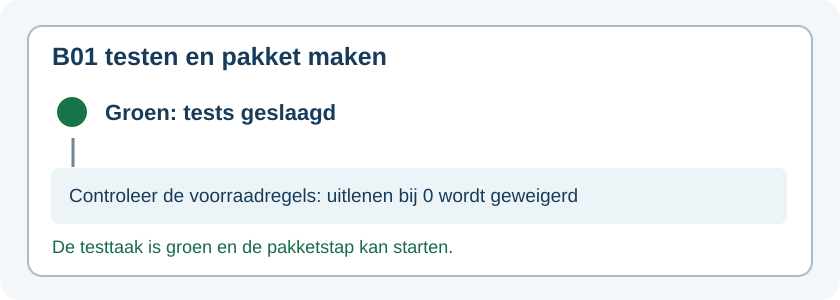

B01: vastgelegde testresultaten
De gelinkte Github Actions-runs zijn echte, historische uitvoeringen van automatische tests met een nepsheet. De B01-situaties en invoer zijn fictieve testgegevens, geen leerlinginlevering, live Sheet, live webapp of klantresultaat. De oorspronkelijke bronnen staan onderaan in de private ontwikkelrepository.


Rode test
Fictieve testcasus, echte historische run. Een bewust verkeerde verwachting stelde dat een tweede uitlening bij voorraad 0 lukt. De automatische test faalde. De voorraadregel weigerde die uitlening.
Groene test
Fictieve testcasus, echte historische run. Na herstel van de testverwachting slaagden de controles. Bij voorraad 0 blijft de voorraad 0.
Rode pakket-run
De tests faalden door een bewust verkeerde verwachting. De pakketstap werd overgeslagen. Er was geen artifact.
Groene pakket-run
De tests slaagden. Daarna maakte de workflow één versiepakket. Download het vastgelegde B01-versiepakket. Het oorspronkelijke artifact had een bewaartermijn van 14 dagen.
Workflow
De stap voorraad controleert de regels. De pakketstap wacht op een geslaagde voorraadcontrole.
jobs:
voorraad:
runs-on: ubuntu-latest
steps:
- uses: actions/checkout@v4
- name: Controleer de voorraadregels
run: node se2/b01/tests/voorraad.test.cjs
pakket:
needs: voorraad
runs-on: ubuntu-latestBekijk de bestaande testuitleg met de testuitvoer.